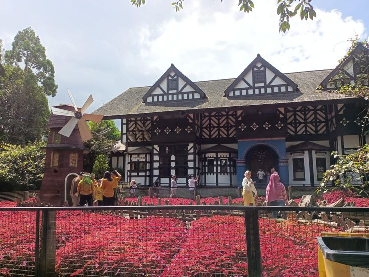

Sejarah

kata bandung berasal dari kata bendung atau bendungan karena terbendungnya sungai
Citarum oleh lava gunung tangkuban parahu yang lalu membentuk telaga. Legenda yang
di ceritakan oleh orang orang tua di bandung mengatakan bahwa bandung diambil dari
sebuah kendaraan air yang terdii dari dua perahu yang diikat berdampingan yang disebut
perahu bandung yang digunakan oleh Bupati Bandung, R.A Wirantakusumah II, untuk
melayari Ci Tarum dalam mencari tempat kedudukan kabupaten yang baru untuk menggantikan
ibu kota yang lama di Dayeuhkolot.
berdasarkan filosofil sunda, kata bandung juga berasal dari kalimat Nga-Bandung-an Nga-Bandung-an Nga-Bandung-an
indung, yang merupakan kalimat sakral dan luhur karena mengandung nilai ajaran sunda.
Nga-Bandung-an artinya menyaksikan atau bersaksi. banda adalah sesuatu yang
berada di alam hidup yaitu di bumi dan atmosfer, baik makhluk hidup maupun benda mati.
Sinonim dari banda adalah harta. indung berarti ibu atau bumi, di sebut juga sebagai ibu
pertiwi tempat banda berada.
Geografis
 Kota Bandung dikelilingi oleh pegunungan, sehingga bentuk morfologi wilayahnya
sebuah mangkuk raksasa,secara geografis kota ini terletak di tengah-tengah
Jawa Barat, serta berada pada ketinggian ±768 m di atas permukaan laut,dengan titik
tertinggi berada di sebelah utara dengan ketinggian 1.050 meter di atas
laut dan sebelah selatan merupakan kawasan rendah dengan ketinggian 675 meter di
permukaan laut.
Kota Bandung dikelilingi oleh pegunungan, sehingga bentuk morfologi wilayahnya
sebuah mangkuk raksasa,secara geografis kota ini terletak di tengah-tengah
Jawa Barat, serta berada pada ketinggian ±768 m di atas permukaan laut,dengan titik
tertinggi berada di sebelah utara dengan ketinggian 1.050 meter di atas
laut dan sebelah selatan merupakan kawasan rendah dengan ketinggian 675 meter di
permukaan laut.
kota bandung dialiri dua sungai utama,yaitu sungai Cikapundung dan sungai Citarum
beserta anak-anak sungainya yang pada umumnya mengalir kearah selatan dan bertemu di
sungai citarum. dengan kondisi yang demikian, Bandung selatan sangat rentan terhadap
masalah banjir terutama pada musim hujan.
Wisata
Sejak dibukanya Jalan Tol Cipularang, kota Bandung telah menjadi tujuan utama
menikmati liburan akhir pekan terutama dari masyarakat yang berasal dari
sekitarnya. Selain menjadi kota wisata belanja, kota Bandung juga dikenal
sejumlah besar bangunan lama berarsitektur peninggalan Belanda.
Fram House Lembang

Berada di jalur utama Bandung-Lembang, Farm House menjadi objek wisata yang tidak
pernah sepi pengunjung. Selain karena letaknya strategis, kawasan ini juga
menghadirkan nuansa wisata khas Eropa. Semua itu diterapkan dalam bentuk spot swafoto
Instagramable.
Observartorum Bosscha

Memiliki beberapa teleskop, antara lain, Refraktor Ganda Zeiss, Schmidt Bimasakti,
Refraktor Bamberg, Cassegrain GOTO, dan Teleskop Surya. Refraktor Ganda Zeiss adalah
jenis teleskop terbesar untuk meneropong bintang. Benda ini diletakkan pada atap kubah
sehingga saat teropong digunakan, atap tersebut harus dibuka. Observatorium Bosscha
boleh dikunjungi oleh siapapun, tanpa tiket. Namun, bagi yang ingin menggunakan
teleskop Zeiss, wajib mendaftarkan diri. Untuk instansi atau lembaga pendidikan,
diberikan jadwal hari Selasa sampai Jumat. Sementara itu, kunjungan individu dibuka
setiap hari Sabtu.